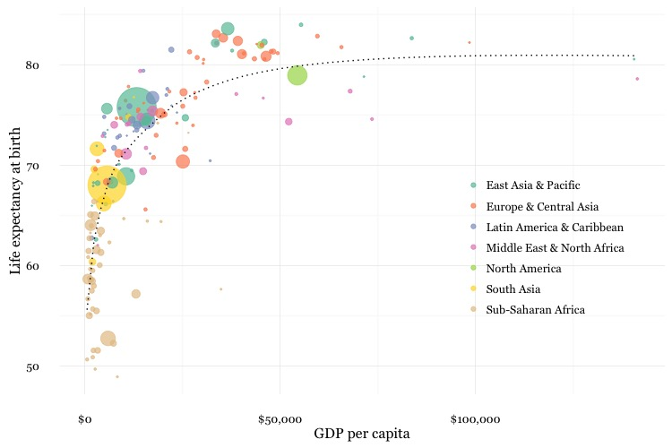
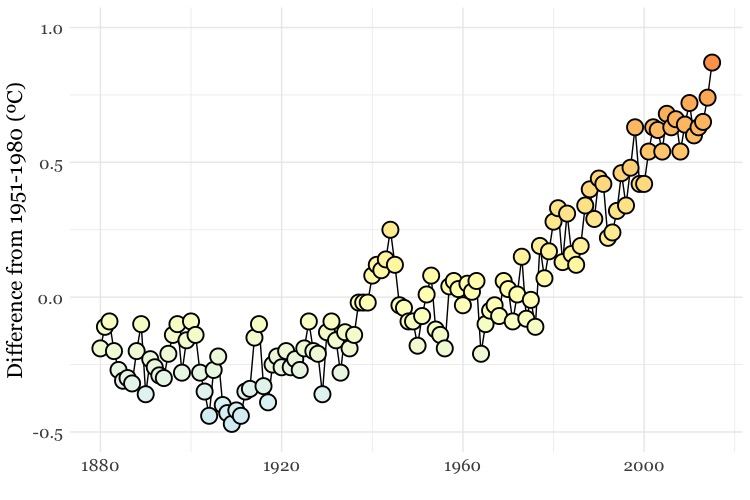
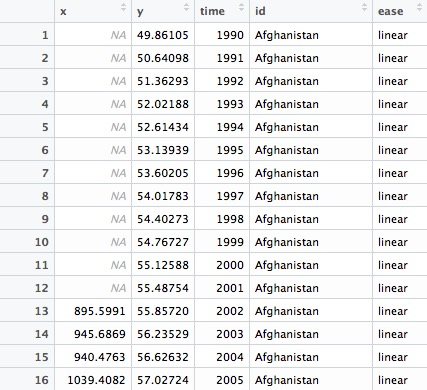

Iteration and animation: loops, GIFs, and videos
In today’s class, we will make animated GIFs and videos from charts made in R using ggplot2. This depends on connecting R to two software libraries, ImageMagick (for processing images, inlcuding GIFs), and FFmpeg (for processing video). See the software page for installation instructions.
The data we will use today
Download the data for this session from here, unzip the folder and place it on your desktop. It contains the following folders and files:
nations.csvData from the World Bank Indicators portal, as used in week 3 and subsequently.warming.csvNASA data on the annual average global temperature, from 1880 to 2015, compared the the average from 1951-1980.mapsFolder containing individual frames, from 1880 to 2015, each showing annual average temperatures across the globe, from 1880 to 2015, again compared the the average from 1951-1980. These were made from NASA data, using this software.chartscombinedEmpty folders into which we will save individual frames from which to make a video animation.
Setting up
Launch RStudio, create a new RScript, and set the working directory to the folder with your downloaded data by selecting Session>Set Working Directory>To Source File Location. Save the script as week14.R.
Install devtools and gganimate packages
We are going to animate ggplot2 graphics using the gganimate package, which is an extension to ggplot2. It depends upon ImageMagick and FFmpeg to make GIFs and videos.
gganimate is available on GitHub. To install from there, you first need to install the devtools package. For all the code blocks that follow, copy them into your script and run.
# first install devtools
install.packages("devtools")
# then gganimate
devtools::install_github("dgrtwo/gganimate")
Load the packages we will use today
# load required packages
library(readr)
library(ggplot2)
library(gganimate)
library(scales)
library(dplyr)
Apart from gganimate, we have encountered all of these packages in previous weeks.
Make a Gapminder-style animated bubble chart
In week 8, we made the following chart, showing GDP per capita, life expectancy at birth and population for the world’s nations in 2014:

This was the code to generate that chart:
# load data
nations <- read_csv("nations.csv")
# filter for 2014 data only
nations2014 <- nations %>%
filter(year == 2014)
# make bubble chart
ggplot(nations2014, aes(x = gdp_percap, y = life_expect)) +
xlab("GDP per capita") +
ylab("Life expectancy at birth") +
theme_minimal(base_size = 12, base_family = "Georgia") +
geom_point(aes(size = population, color = region), alpha = 0.7) +
scale_size_area(guide = FALSE, max_size = 15) +
scale_x_continuous(labels = dollar) +
stat_smooth(formula = y ~ log10(x), se = FALSE, size = 0.5, color = "black", linetype="dotted") +
scale_color_brewer(name = "", palette = "Set2") +
theme(legend.position=c(0.8,0.4))
Some reminders about what this code does:
scale_size_areaensures that the size of the circles scales by their area according to the population data, up to the specifiedmax_size;guide = FALSEwithin the brackets of this function prevents a legend for size being drawn.labels = dollarfrom scales formats the X axis labels as currency in dollars.stat_smoothworks likegeom_smoothbut allows you to use aformulato specify the type of curve to use for to trend line fitted to the data, here a logarithmic curve.
Now we will use gganimate to generate an animation of the chart, from 1990 to 2014. Here is the code:
nations_chart <- ggplot(nations, aes(x = gdp_percap, y = life_expect, frame = year)) +
xlab("GDP per capita") +
ylab("Life expectancy at birth") +
theme_minimal(base_size = 16, base_family = "Georgia") +
geom_point(aes(size = population, color = region), alpha = 0.7) +
scale_size_area(guide = FALSE, max_size = 20) +
scale_x_continuous(labels = dollar) +
stat_smooth(aes(group = year), formula = y ~ log10(x), se = FALSE, size = 0.5, color = "black", linetype="dotted") +
scale_color_brewer(name = "", palette = "Set2") +
theme(legend.position=c(0.8,0.4))
Running this code will create an R object of type gg called nations_chart.
Now display it in the Viewer panel by running the following:
gg_animate(nations_chart)
This should be the result:

How the code works
I made a couple of small changes to the ggplot2 code from the static graphic to optimise the appearance of the animation, increasing both the base_size for the text, and the max_size for the scaled circles.
The most important change, however, is in the initial ggplot() function, which now includes frame = year. In the animation, this is the code that creates a separate chart for each year in the data.
Also notice that the code that creates the trend line now includes aes(group = year). This is needed if we want to create a separate trend line for each year. Without this, a single trend line would be calculated for all the data across all the years, and would be static across the animation.
Save as a GIF and a video
Having made an animation, we can now save it as a GIF or a video:
# save as a GIF
gg_animate(nations_chart, "nations.gif", ani.width = 750, ani.height = 500, interval = 0.2)
# save as a video
gg_animate(nations_chart, "nations.mp4", ani.width = 1600, ani.height = 900, interval = 0.1)
You can use the options ani.width and ani.height to set the dimensions, in pixels, of the animation; interval sets the interval between the frames, in seconds (the default is 1 second). For the video, I have set the ratio between width and height at 16:9, consistent with YouTube and Vimeo format.
Here is the video:
Make a cumulative animation of historical global average temperature
For the Gapminder-style video, we displayed only the data for the year in question in each frame. In some cases, however, you may want to animate by adding data with each frame, and leaving the previously added data in place.
We will explore that now by making an animation of the dot-and-line chart in this video.
Here is the code to make a static version of the chart:
# load data
warming <- read_csv("warming.csv")
# set color palette and sequence of values to apply it to
pal <- c("#313695","#4575b4","#74add1","#abd9e9","#e0f3f8","#ffffbf","#fee090","#fdae61","#f46d43","#d73027","#a50026")
vals <- seq(-2, 2, length = 11)
# draw chart
ggplot(warming, aes(x = year, y = annual)) +
geom_line(colour="black") +
geom_point(shape = 21, colour="black", aes(fill=annual), size=5, stroke=1) +
scale_x_continuous(limits=c(1880,2015)) +
scale_y_continuous(limits=c(-0.5,1)) +
theme_minimal() +
scale_fill_gradientn(colors = pal, values = vals, rescaler = function(x, ...) x, oob = identity, guide=FALSE) +
xlab("") +
ylab("Difference from 1951-1980 (ºC)") +
theme(text=element_text(size=16, family="Georgia"))
This should be the result:

The file warming.csv contains the fields year and annual, the latter being the global annual average temperature, compared to the 1951-1980 average.
This code uses a palette of colors running from cool blues, through neutral yellows, to warm reds, and applies them to a sequence of values running from -2 to +2. This is so the chart uses the same color palette as the maps we will animate later on, and combine with the chart.
The palette is then applied with the function scale_fill_gradientn(), see here for more, including the scaling of the colors against the supplied values.
As this is a dot-and-line chart, it includes both geom_line() and geom_point() layers. Notice that the geom_point() function also defines a numbered shape: 21 is a circle with a filled area, see here for other options. By using this shape, we can set the outline color to black and then use an aes mapping to fill it with color from the selected palette, according to the values for the annual variable.
To animate this chart, adding a year with each frame, use the following code:
# create the animation
warming_chart <- ggplot(warming, aes(x = year, y = annual, frame = year, cumulative = TRUE)) +
geom_line(colour="black") +
geom_point(shape = 21, colour="black", aes(fill=annual), size=5, stroke=1) +
scale_x_continuous(limits=c(1880,2015)) +
scale_y_continuous(limits=c(-0.5,1)) +
theme_minimal() +
scale_fill_gradientn(colors = pal, values = vals, rescaler = function(x, ...) x, oob = identity, guide=FALSE) +
xlab("") +
ylab("Difference from 1951-1980 (ºC)") +
theme(text=element_text(size=16, family="Georgia"))
# run in the viewer
gg_animate(warming_chart, interval = 0.1)
This time, the initial ggplot() function also contains the code cumulative = TRUE, which adds one year of data with each frame, and leaves the previously added data in place.
This should be the result:

Again, we can save as GIF and video:
# save as GIF and video
gg_animate(warming_chart, "warming.gif", ani.width = 750, ani.height = 500, interval = 0.1)
gg_animate(warming_chart, "warming.mp4", ani.width = 1600, ani.height = 900, interval = 0.1)
Combine the chart with maps to make a composite animation of the historical temperature record
To replicate this video, shown above, we need to combine the maps in the maps folder with individual images of each frame of the chart. So rather than using gganimate, we will now write a for loop to save the individual frames.
For loops: how they work
This code should help explain how a for loop works:
# make a list of years, from 1880 to 2015
years <- c(1880:2015)
# for loop to print each year to the console, pausing for one second each time
for (y in years) {
print(y)
Sys.sleep(1)
}
The output should begin:
[1] 1880
[1] 1881
[1] 1882
[1] 1883
[1] 1884
[1] 1885
[1] 1886
[1] 1887
The first line of code creates a list of integers, from 1880 to 2015, as an R object called years.
This part of the code iterates through each entry in the list: for (y in years).
For each iteration, it executes the code in the curly brackets, which here prints y, and then pauses for a second.
Use a for loop to draw and save a chart for each year
This code uses the same principle to draw and save a chart for each year:
# make a list of years, from 1880 to 2015
years <- c(1880:2015)
# loop to make a chart for each year
for (y in years) {
tmp <- warming %>%
filter(year <= y)
chart <- ggplot(tmp, aes(x=year,y=annual)) %>%
+ geom_line(colour="black") %>%
+ geom_point(shape = 21, colour="black", aes(fill=annual), size=5, stroke=1) %>%
+ scale_x_continuous(limits=c(1880,2015)) %>%
+ scale_y_continuous(limits=c(-0.5,1)) %>%
+ theme_minimal() %>%
+ scale_fill_gradientn(colors = pal, values=vals, rescaler = function(x, ...) x, oob = identity, guide=FALSE) %>%
+ xlab("") %>%
+ ylab("Difference from 1951-1980 (ºC)") %>%
+ theme(text=element_text(size=16,family="Georgia"))
ggsave(file=paste0("charts/",y,".jpg"), plot = chart, width = 8, height = 4.5, units = "in", dpi=300)
print(paste0("processing: ",y))
}
What this code does
For each year, y, the code first makes an R object called tmp, which is the warming data frame, filtered for all years equal or less to y.
Then it creates an R object called chart, which is a static ggplot2 chart drawn from that data.
It then saves that chart using the ggsave() function, at the defined dimensions and resolution, before printing a message to the R console giving a progress update on the loop.
This code makes use of an R function called paste0(). It is the equivalent of =concatenate() in a spreadsheet formula, appending text into a single string. The elements to be combined are separated by commas, and can be either text, written in quote marks, or a named variable or object that contains text, or a number that can be rendered as text.
So when y is 1880, (paste0("charts/",y,".jpg") is "charts/1880.jpg". This is how the individual charts get saved with the appropriate names in the charts folder.
Combine the charts and maps into a single frame for each year
Again, we will use a for loop. This time the loop will be written in R, but it will send ImageMagick code to your wider system using the system() function. It has same effect as if you ran each line of ImageMagick code in the Terminal.
# combine the maps and charts with ImageMagick, add year label to each frame
for (y in years) {
system(paste0("convert charts/",y,".jpg maps/map",y,".jpg -geometry +305+72 -composite -pointsize 100 -font Georgia -annotate +2000+1120 ",y," combined/img",y,".jpg"))
print(paste0("processing: ",y))
}
Here’s what the ImageMagick code looks like when y is 1880:
convert charts/1880.jpg maps/map1880.jpg -geometry +305+68 -composite -pointsize 100 -font Georgia -annotate +2000+1120 1880 combined/img1880.jpg
convert is one of the main commands in ImageMagick, used to convert between image formats as well as to manipulate images in a variety of ways.
This part of the code takes the two named files, and creates a composite, layering the second over the first with its top left hand corner 305 pixels from the left and 68 pixels from the top of the image:
charts/1880.jpg maps/map1880.jpg -geometry +305+68 -composite
This part of the code adds an annotation with the text “1880” to the image, 2000 pixels from the left and 1200 pixels from the top, with the defined size and font face:
-pointsize 100 -font Georgia -annotate +2000+1120 1880
Finally, this completes the convert command, saving the result as a new file in the combined folder:
combined/img1880.jpg
See here for ImageMagick convert options; here, here, and here for more on using the library.
Combine the frames into a GIF and video
First make a GIF with ImageMagick:
# make a GIF with ImageMagick
system("convert -delay 10 combined/*.jpg warming2.gif")
This code creates a GIF called warming2.gif ; -delay defines the interval between each frame in hundredths of a second, so here the delay is 0.1 seconds.
Now make a video with FFmpeg:
# make a video with FFmpeg
system("ffmpeg -f image2 -start_number 1880 -i combined/img%d.jpg -vf 'scale=trunc(iw/2)*2:trunc(ih/2)*2' -b 64000k warming2.mp4")
This code combined the images into a video called warming2.mp4.
Don’t worry too much about the details of this code, other than to know that it works.
image2 creates a video from a sequence of images. Here the code looks for files with the format combined/img%d.jpg, where %d is an integer, starting at 1880; %03d would look for file names ending with a number with three decimal places, for example combined/img.001.jpg.
-r defines the frame rate, in frames per second.
Having made a video, you can change its speed like this:
# change the speed of the video
system("ffmpeg -i warming2.mp4 -vf 'setpts=2*PTS' warming3.mp4")
This code creates a new video with half the speed of the first; 'setpts=4*PTS' would run at a quarter of the speed, and so on.
See here for full documentation for FFmpeg.
Create smoother animations, using tweenr
Look back at the first GIF we made from the nations data. Wouldn’t it be nicer if all the points moved smoothly, rather than jolting from year to year? It is possible to achieve this effect, using an R package called tweenr, which can “interpolate” data — provide the “missing” values — for an animation with more frames.
First, install and load tweenr
# install and load tweenr
install.packages("tweenr")
library(tweenr)
To interpolate data using tweenr’s tween_elements() function, first create a data frame with the fields x for the co-ordinate on the X axis, y for the co-ordinate on the y axis, time for the data that will be used to make the frames, and id for the unique identifier for each point. You also need a variable called ease, which defines the method to use for the interpolation: "linear" will achieve a smooth, steady animation.
This code prepares the nations data:
# prepare data
nations_edit <- nations %>%
arrange(country, year) %>%
select(gdp_percap,life_expect,year,country) %>%
rename(x=gdp_percap,y=life_expect,time=year,id=country) %>%
mutate(ease="linear")
The new data frame nations_edit should look like this:

Now run the tween:
# tween
nations_tween <- tween_elements(nations_edit, "time", "id", "ease", nframes = 300)
The new data frame nations_tween should look like this:

The function tween_elements() creates new variables called .frame, one for each of the specified number of frames, and .group, which corresponds to the id in the previous data frame, here the country names. It calculates new x, y, and time values for each frame. Scroll down and you will see that many of the time values now include decimal fractions.
To make the animated chart, we need to join to the original data, which means creating year and country variables, to match against the original data:
# create year and country fields, for join
nations_tween <- nations_tween %>%
mutate(year = round(time),
country = .group)
The data should now look like this:

Now run the join:
# join
nations_tween <- inner_join(nations_tween,nations)
The data should now look like this:

Now we can make the animated chart using gganimate:
# make animated chart
nations_tween_chart <- ggplot(nations_tween, aes(x = x, y = y, frame = .frame)) +
xlab("GDP per capita") +
ylab("Life expectancy at birth") +
theme_minimal(base_size = 16, base_family = "Georgia") +
geom_point(aes(size = population, color = region), alpha = 0.7) +
scale_size_area(guide = FALSE, max_size = 20) +
scale_x_continuous(labels = dollar) +
scale_color_brewer(name = "", palette = "Set2") +
theme(legend.position=c(0.8,0.4))
# run in the viewer
gg_animate(nations_tween_chart, title_frame = FALSE, interval = 0.05)
This should be the result:

Notice that the gg_animate() function this time includes title_frame = FALSE, which prevents the frame number being shown on each chart. In practice, you would want to display the year on each frame, rather than the frame numbers, which are not informative in this case.
This is best done with ImageMagick. So rather than using gganimate, after creating the tweened data frame nations_tween and joining to the original data, you might instead generate individual image files for each frame using a loop, and then annotate each one.
In this case there are 12 frames for each year, so you would need to annotate the first 12 frames with “1990”, the next 12 with “1991,” and so on.
You could do that like this, assuming a list frames with each of the frame numbers, and a folder called edited to save the annotated frames:
# add labels for year
for (f in frames[1:12]) {
system(paste0("convert charts/",f,".jpg pointsize 100 -font Georgia -annotate +2000+1120 1990 edited/img",f,".jpg"))
print(paste0("processing: ",f))
}
for (f in frames[13:24]) {
system(paste0("convert charts/",f,".jpg pointsize 100 -font Georgia -annotate +2000+1120 1991 edited/img",f,".jpg"))
print(paste0("processing: ",f))
}
# and so on